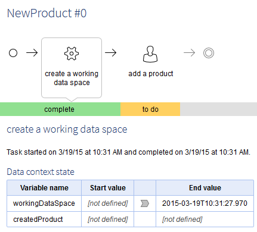

5.6.1 fix A
In this version
5.6.1 fixes
5.6.1 fix A released on May 15, 2015 for bug fixes.
5.6.1 released on April 27, 2015.
Overview of 5.6.1
This version is mainly a maintenance release, with a special focus on performance improvements, especially regarding hierarchical views and permissions.
This version offers a limited set of new features, including a new workflow step called 'Wait task'.
User interface
Forms layout
The layout of forms has been enhanced.
Main changes include a new central indentation for groups: the indentation system (expand/collapse buttons and vertical grey line) is now located between labels and input fields. In previous versions it was located to the left of the labels, but it was not convenient. The documentation pane button, primary key icon, and specific optional icons are now grouped to the right of the label. For consistency purposes, the mandatory field indicator is now also located to the right of every label. If there is more than one, elements will stack.

Note
Custom layouts have to implement the method starting a table of form rows in order to benefit from these improvements. See UIComponentWriter.startTableFormRow and UIComponentWriter.startFormRow in Java API for more information.
The primary key and foreign key icons are now only represented by the primary key icon. Foreign keys that are not primary keys do not have icons.
User views
Users can now define the current displayed view as their favorite view. Defining a view as 'Favorite' means that this view will be automatically applied when accessing the table.
'Preferred views' have been renamed since version 5.6.0 and are now called 'Recommended views'.
The 'Manage views' sub-menu allows defining the current displayed view as the favorite view, or defining the recommended view as the favorite view.
See Manage views for more information.
Perspectives improvements
In the perspectives, the label of action menu items is now optional. If not specified, the label will be dynamically generated by EBX5 when the menu item is displayed.
See Perspectives configuration for more information.
Two new HTTP parameters have been published so that web components can be created on perspectives and on perspectives actions.
See Using EBX5 as a web component for more information.
In the perspectives, a counter has been added next to the inbox menu item in order to display the number of remaining work items.
Documentation pane optimization
The documentation pane button, located to the right of a label, is no longer displayed when the documentation pane only repeats the label itself. This prevents from clicking on the button when there is nothing more than the label to be displayed in the documentation pane.
Display mode of table data
A new parameter allows defining, in a web component, whether to display the filtered table view or the first record upon first call of the web component.
See firstCallDisplay parameter or the Java API for more information.
Workflows
Wait tasks
Workflows now include a new step called 'Wait task'. It is represented by this icon  . This step is used to put a workflow in a pending mode until a given event is received. The event notification is managed either by a data service or an API.
. This step is used to put a workflow in a pending mode until a given event is received. The event notification is managed either by a data service or an API.
For example, this new feature is used when communication with an external system is required in a workflow process to retrieve specific information generated by the external system. Thanks to this new step type, it is now possible to pause the workflow until the external system responds.
Example of a wait step in a data workflow:

When resuming the workflow, the external system has the possibility to update the associated data context. In this way, after resuming, the workflow will be able to use the received information in the following steps.
When the workflow reaches a wait task, its state becomes 'Waiting for event'.
In the 'Workflow models' section, a new service is available to add a wait task to a workflow. See Wait tasks for more information.
A wait task is associated with a WaitTaskBean. This bean must be declared in a module.xml file.
A wait task can be resumed by Java API or by the 'workflow' data service. See WorkflowEngine.resumeWaitTask and resume data service for more information.
In the 'Data workflows' section, a new administration action is available to force resuming a waiting data workflow. A new permission is associated with this action in the workflow permissions, in the configuration of a workflow model. See Actions on data workflows tasks and Permissions on data workflows for more information.
Follow data context in the graphical view
The graphical workflow view has been enhanced to display the data context state for each workflow step. The information is only available to administrators.
For each step, the value of data context variables is displayed before and after the step execution (when the step is complete):

It is now possible to know which data context variables have been updated for each step. When browsing steps, the administrator can follow the history of related data context.
Mandatory comment on a work item
In previous versions, when a mandatory comment was left blank on a work item, an error message was displayed. The user interface has been improved to automatically open the comment form when the work item is empty but required.
Updated workflow configuration
The unused field 'activate email' has been removed from the workflow configuration section.
To enable or disable emails, the property 'ebx.mail.activate' in the 'ebx.properties' file must be used instead.
See Activating and configuring SMTP and e-mails for more information.
Data services
New operation to resume a data workflow
A new 'resume' operation has been added to the 'Data workflow' data service. The corresponding WSDL can be downloaded from the user interface in the 'Data services' section.
See the resume a workflow data service for more information.
'Start / end a workflow' operations have been updated
The existing 'Data workflow' operations have been updated to use the process instance key.
The backward compatibility with the process instance id and the publication name is ensured.
See the start a workflow and end a workflow data services for more information.
Performance improvements
Permissions
Additional caching of resolved permissions allows for enhanced responsiveness, especially on tasks involving a large number of permissions.
For example, it has been observed that, for an 'expand all' operation on hierarchies, the CPU usage has been divided by 10.
Caching is done at the session-level; it only takes user-defined permission rules into account, not programmatic rules (which are not cached since they are contextual and dynamic). The session cache life cycle depends on the context, as described hereafter:
In the UI, the cache is cleared for every non-ajax event (i.e on page display, pop-up opening, etc.).
In programmatic procedures, the cache lasts until the end of the procedure, unless explicitly cleared (see below).
Data space selector
The data space selector in the navigation pane of the functional 'Data' area has been optimized for large repositories.
Hierarchy views
Many improvements have been performed on hierarchy views navigation.
Browsing the data hierarchy is now smoother, even on hierarchies containing millions of nodes.
The response time on text searches, 'expand all' and many more operations has also been greatly improved.
Hierarchy views ordering
The ordering mechanism in data hierarchies has been enhanced to avoid a large number of record updates when attaching a node to another parent. The ordering system has a new feature that allows having an integer field (that can be hidden) with "holes". When attaching a node to another parent, the order field is updated without impacting other records placed after the node. Only the order of the attached node is modified.
In some rare cases, when the hole is filled after several insertions at the same place, the order of all sibling nodes is recomputed, leading to a large number of record updates. To avoid these updates, it is recommended to set the order field to auto-increment, with an increment step equal or greater than 1000 (hole size).
Startup time
Dependencies between data sets and data spaces have been reviewed in order to reduce the repository startup time. Startups are now expected to be faster for repositories with many data sets defining relationships (using foreign keys, selection nodes or associations) to other data sets and data spaces.
Technical administration
Distributed data delivery (D3)
Broadcast segmentation using JMS
The new property ebx.jms.d3.archiveMaxSizeInKB has been added. It specifies the maximum size of the broadcast content, used for dividing JMS messages containing archives into sequences so that their size does not exceed the maximum size.
Ability to delete slave snapshots
The limitation on the deletion of slave snapshots has been removed. All snapshots can now be deleted by authorized profiles. However, the last broadcast snapshot can never be deleted.
Data space view
The last broadcast snapshot, initially displayed in the technical table 'Delivery data spaces' in '[D3] Master configuration', is now highlighted in the snapshot table of the data space. It is represented by an icon displayed in the first column.
Java EE Manifest file in webapp
If a specific webapp defines a MANIFEST.MF file, EBX5 reports the 'Implementation-Title' and 'Implementation-Version' values in Administration > Actions > Administration tools > Modules and data models.
Java API
ProcedureContext.isReadOnly()
The new method isReadOnly allows knowing if the procedure is Read Only.
See ProcedureContext.isReadOnly in Java API for more information.
Version upgrade
Backward compatibility
Data modeling
Conversion error message
Due to the fix of the issue #14777, the definition of conversion error messages has been simplified. The previous notation is still supported but is no longer documented.
See Conversion error messages for more information.
Data model dependencies
Data model compilation is now stricter regarding the definition of dependencies to other datasets during the setup of constraints. That is, a compilation error is now added if the target table of a dependency in another dataset does not exist.
See DependenciesDefinitionContext for more information.
Validation
Uniqueness constraints on multiple fields
Due to the fix of the issue #13684, the validation of uniqueness constraints on multiple fields is now stricter regarding undefined values. In prior versions, undefined values were ignored when checking sets of values but are now taken into account. That is, sets of values are now considered as being duplicated if they have the same defined and undefined values.
See Uniqueness constraint for more information.
How to upgrade an installed environment
In order to upgrade your version of EBX5, perform the following steps:
Backup your repository, including the RDBMS and the directory
ebx.repository.directory.Replace the
*.warandebx.jarfiles on your application server.
5.6.1 fix A bug fixes
Core engine
[16064] Scheduled tasks may not be executed in the expected order.
If a previous task prevents the launch of the following tasks, they will not be executed according to the planned order.
[16084] An error occurs publishing a data model when the replication of a dataset fails.
An NullPointerException occurs after publishing a data model if the replication of one of its datasets fails.
Data modeling
[15852] Blank pop-up displayed when adding an HTML criterion in a validation/computation rule.
When a user adds an HTML criterion to a validation or computation rule, a blank pop-up is displayed.
[16113] A compilation error is erroneously added to data models that define a link to another data space.
A compilation error can be erroneously added to a data model that defines a link to a data set in another data space. This occurs when the target data set defines a link to another data set in the same data space.
Data validation
[15996] An error occurs during the incremental validation when the schema of the data set has errors.
A NullPointerException is raised during the incremental validation when the schema of the data set has errors.
[16071] OutOfMemoryException when deleting a record in a target table of an inter data space FK.
When a record is deleted in a target table of a foreign key in another data space, the validation will check if this record had previously been selected in the FK in other data spaces.
With many data spaces and high volumetry, the performances of the application will decrease and the memory print will grow because of the index loading in the cache.
It may lead to an out of memory error.
Data views
[15891] Inconsistency of field icon display in the 'Apply last modification' screen.
In the 'Apply last modification' screen, field icons are displayed while in other scopes they are not.
[15895] An error occurs when switching to another view when the default view is set as the recommended view.
[15988] An error occurs on a predicate using a field of the URI type.
A
ClassCastExceptionis thrown if a predicate has been set on aURIfield.
Bug fixes
Core engine
[11349] A warning message is displayed after a merge if the user is not the Administrator nor the owner of the merged data space.
The following message is displayed: Unable to lock/unlock the data space [xxxxx]. You do not have sufficient rights." However, this has no impact on the merge result.
[14356] String length constraints evolutions in mapped tables are not properly reflected in database tables.
In a mapped table, if a *fixed* length constraint is replaced by a longer *max* length constraint, it is not possible to enter a string exceeding the former fixed length.
[14412] A hierarchy called through a web component with a filter or a predicate is not pruned.
In previous version, a hierarchy called through a web component was automatically pruned if a filter or a predicate was applied. It is no longer the case in 5.6.0.
[14473] The record creation time is not accurate.
If a record has been created in a merged child data space, the record creation time corresponds to the time of the merge with the parent branch.
[14536] RequestResult.isEmpty() fetches more records than necessary in the presence of sort criteria.
If a Request defines sort criteria that are not compliant with the elected index, then invoking methods RequestResult.isEmpty(), RequestResult.isSizeGreaterOrEqual() or RequestResult.isSizeEqual() retrieves the whole table, then sorts it.
This performance hit should be avoided, since we are only interested in estimating the size of the result.
[14795] The add-on licenses are not considered as valid after an archive import.
When the user feeds the add-on registration table by an archive import, the add-on licenses are not considered as valid in the add-on activation check.
[14809] A method returns an incorrect value when running a service from 'Perspectives'.
The method
getUrlForEndingServicereturns an incorrect value when running ServiceContext().getURLForEndingService() from 'Perspectives'.[14824] Child data set are not saved after a data space merge under certain conditions.
When a data space is merged, some overwritten fields of the child data set are not merged, even if the record is marked as overwritten.
The problem occurs:
- on fields that belong to groups,
- when the child data set is identical to its parent before the child data space creation,
- when 'Access Properties' for groups are not set to 'Read & Write'
[14831] When an error appears while loading data from the RDBMS, it may be masked by another technical error.
As an example, a
NullpointerExceptionthrown when executing the methodLabelDescriptionForLocale.toStringmasks the original exception.[14896] An error occurs when requesting data from a relational table when the 'last user' metadata is null.
[14961] An error occurs when requesting data from a history table when the user is null.
[15065] Programmatic permission rules are not enforced for requests using a primary key filter.
In some cases of inner optimization, a request will retrieve records that should have been filtered out by the programmatic permission rule.
[15338] Impossibility to compare a snapshot created on EBX4 with a data space created on EBX5.
An error occurs when comparing a snapshot created on EBX4 with a data space created on EBX5.
[15473] Error due to an undetected name conflict when changing an element type for a mapped table.
On historized and relational tables, on some schema evolutions involving multi-valued elements, an error occurs due to a name conflict that is not detected.
[15475] It is possible to create data sets in THE administration tabs using archive imports in the perspective administration actions.
[15587] Default file name may be incorrect when exporting a table.
If the table label contains /\\:*?\"<>|, the suggested default file name is not valid for a Windows platform.
[15601] At data space creation, the Java cache is fed using Java strong references.
At data space creation, the Java cache is fed using strong references even if the policy is defined to use soft references. As a consequence, the creation of data spaces can lead to a memory overflow.
[15620] Auto-increments table is not always updated.
The auto-increments table is not updated if the 'disableMaxTableCheck' is activated and if an
OperationExceptionis thrown in thehandleAfterCreatemethod of a trigger.[15904] EBX5 logs always report an add-on module as activated even it has been deactivated.
[15920] The method
ProcedureResult.getExceptionFullMessage()may cause aNullPointerException.ProcedureResult.getExceptionFullMessage()may cause aNullPointerException.
Data modeling
[8222] In the DMA, alignment problem in the 'Value' tab of 'Excluded segment' occurs after an error.
Under the advanced controls of a field, the label of 'Minimum excluded value'/ 'Maximum excluded value' and their values are not horizontally aligned after an error occurs due to inputting a minimum value that is greater than the maximum value.
[10481] The user interface has an alignment problem when the user creates a data set after publishing the data model.
When the user publishes a data model, the fields' labels are not vertically aligned in the 'create new data set' screen.
[11413] The user interface has an alignment problem when the user creates a record in 'Included data models'.
In 'Included data models', after clicking to create a record with the 'Packaged in module' mode without specifying any value, the 'Module name' and 'Path in module' labels and their values are not horizontally aligned.
[14144] Cannot define a second group field as a primary key in a table containing two groups using the same complex data type.
In a table contains two group which reuses the same complex data type, when defining field of the second group as primary key, an error message states that this field does not exist.
[14170] An error message is displayed when a user creates a data set from an existing data set containing a fatal error.
When the user copies data from an existing data set which contains a fatal error, an error message is displayed.
[14323] In the 'Data Model Assistant' it is possible to define the XPath and the programmatic filter on a foreign key.
It is possible to define the XPath and the programmatic filter on a foreign key.
[14439] A blank pop-up is displayed when adding a formula with 'String' functions in a computation rule.
When adding a formula with 'String' functions (starts-with(string, string) and contains(string, string)) in a computation rule, an error occurs and a blank pop-up is displayed.
[14646] Inconsistent display of the 'not defined' value in the 'Publication' and 'Data set' fields when publishing a data model.
In the 'Publication' and 'Data set' fields under 'Copy data from an existing data set', the [not defined] value is displayed in a regular font. It should be displayed in italic font.
[14675] 'Default view' label in a simple data type should be hidden.
In a simple data type which sets association properties, the 'Default view' label should be hidden since the user cannot define this property on a simple data type.
[14690] Unexpected error when publishing a data model containing associations using simple data type that defines an XPath constraint.
This issue occurs in a data model containing at least two associations using the same simple data type that defines an XPath constraint. An unexpected error is displayed when the user publishes the model.
[14777] It is not possible to specify a conversion error message on a simple type definition.
The conversion error messages defined on a simple type definition are ignored when they are set in an XML Schema document.
It is also impossible to specify conversion error messages in the DMA.
[14905] Unable to set a uniqueness constraint in the DMA in a table containing two groups using the same complex data type.
When declaring a uniqueness constraint on a field, the DMA rejects the constraint with the following message: "Advanced properties / Uniqueness constraints[1] / Unique fields[1]: Field '<pathToField>' does not exist in the table structure".
The problem occurs :
- when the table structure contains 2 groups reusing the same complex type,
- when the constraint is required on a field that belongs to the second group.
[15057] An
AjaxComponentdeclared by an included schema cannot be retrieved.[15058] An
AjaxComponentdeclared by an imported schema cannot be retrieved.[15131] An error occurs when creating a record in a table that is referenced by a foreign key with a filter.
An error occurs when creating a record in a table that is referenced by a foreign key with a filter. This error occurs during the incremental validation of the record that has been created.
[15252] Parameters of filters on a table are not imported in the DMA when importing an existing data model.
JavaBean parameters defined by filters on the table are not imported in the DMA when importing an existing XML Schema document.
Data spaces & History
[12659] Confirmation screen incorrectly displayed when closing a locked data space.
This issue occurs when a user closes a locked data space. A confirmation screen indicates that the data space has been closed, even though an error message "Data space could not be closed" is displayed.
[13581] An alignment problem occurs on the data space archive export page when the data space does not contain any data set.
This issue occurs when there is no data set in the data space.
On the data space archive export page, the 'No data set has been found' error message is not vertically aligned with the user interface text.
[13739] A fatal error occurs when the user exports a data space containing a fatal error.
When the user exports a child data space using one of the following modes:
"The updates with their whole content" or
"The updates only", if the data space contains a data set with a fatal error, a fatal error occurs.
Data validation
[13684] Uniqueness constraint on multiple fields does not raise error if some fields are null.
Uniqueness constraint on multiple fields does not raise error if a subset of the fields are equal and the remaining fields are null.
[14214] The validation messages are not displayed next to the fields in a list of groups.
[15046] Structural constraints are not checked at the data set validation when strictness has been modified.
Structural constraints on mapped tables are not checked when validating explicitly a data set. This can cause an issue if a structural constraint is replaced by a stricter one. In this case, existing values that do not comply with the new constraint are not in error when validating the data set.
[15160] An error occurs on global validation while executing a TableRefFilter constraint.
On global validation, an error occurs while retrieving the value of the foreign key in the record being validated.
[15179] At EBX5 startup, an error occurs when a data set has a foreign key to a data set that is in severe error.
This issue occurs when a data set has a foreign key that refers to another data set that is in severe error only in some data spaces in the repository.
Data views
[8094] Incorrect record order after moving a record to another position in the hierarchy view.
In the hierarchy view, when the user tries to move a record to a different position, the order of nodes is incorrect.
[9923] When the user creates a record in a form containing complex groups, collapsed display does not behave properly.
When the user creates a record in a form containing a very complex group, the collapsed display does not behave correctly.
[10201] Missing documentation pane for the 'Display of labels' field when the user exports a hierarchy node.
On the 'Export CSV' screen of a hierarchy node, the 'Display of labels' label is not fully displayed. Furthermore, there is no documentation pane when the user clicks to see the full content of this field.
[10529] The user interface has an alignment problem when the user exports a hierarchy node.
When the user exports a CSV page of a hierarchy node, the 'Display of labels' field is not vertically aligned.
[10552] The user interface has an alignment problem on the 'Policy' page in the 'Administration' area.
In the 'Administration' area, on the 'Policy' page under 'Directory', the user interface has a field alignment problem.
[13344] Move up/down action is displayed for the first/last leaf node in a filtered hierarchy view.
In an ordered hierarchy view containing a filter, the 'Move up/down' action is available for the first/last leaf node. It should not be available in the 'Services' menu in these cases.
[13775] [Chrome39] A user interface alignment problem occurs when a group is expanded.
When the user expands a group which has the default view 'Expanded' selected, the arrow button and the vertical line of the group are not properly aligned.
[14104] Unexpected error occurs after applying a view with URI criteria containing special characters ':' or '<'.
After creating and applying a custom view view containing URI criteria with special characters ':' or '<', an unexpected error occurs.
[14334] In an overwritten group, a Javascript error occurs when the user clicks on the context-sensitive help button of the foreign key.
In an overwritten group containing a foreign key, a Javascript error occurs when the user clicks on the context-sensitive help button of the foreign key.
[14363] An UI service on a record which does not belong to the target table of the hierarchy may fail.
This happens if the record does not belong to the data set of the target table.
[14394] If the join table is located in another data space, the record creation fails from a hierarchy based on simple join link.
For example, if the join table is in a child data space and the target table is in the parent data space, the record creation will fail with message 'data set does not exist'.
[14410] Cannot return to the hierarchy view after applying the Default view in the 'Menu' table of Perspective configuration.
[14414] Custom views become invalid.
If the foreign key pointing to the target table is part of a primary key containing three fields, and the table containing the foreign key is not a join table, an
IndexOutOfBoundsExceptionoccurs and all the custom views defined on the target table are invalidated.[14423] The view publication is not displayed using a permalink.
[14434] [All browsers] Unfit rectangles appear when the user accesses 'Manage preferred view' in the 'Perspectives' panel.
In 'Perspectives', when the user opens 'Access data' under 'Information governance', and clicks on 'Manage preferred view' under the 'View' menu of a table, two grey rectangles appear. One right below the page header, the other on the footer page.
[14469] The text search does not work as expected with a hierarchy based on a recursive ternary join link with an ordering field.
The text search does not return the expected result if the applied view is a hierarchy based on a recursive ternary join link with an ordering field.
[14524] No error message is displayed when the user inputs an invalid 'date/datetime' criterion in the 'Search' panel.
When the user inputs an invalid value in the 'date/datetime' criterion in the 'Search' panel, no error message is displayed.
[14539] The users selection for preferred view assignment has poor performance when too many users are defined in the directory.
[14542] The foreign key criterion 'by Label' is automatically changed to 'Direct selection'.
When the foreign key criterion is in 'by Label' mode, it is automatically changed to the 'Direct selection' mode when using the 'equals (case sensitive)' operator after saving.
[14621] A 'Technical error' occurs when the session timeout is set to null.
In the 'User interface' under 'Administration', when the session time-out is set to null, a 'Technical error' message is displayed. This occurs after the user logs out and logs in again.
[14634] The label containing a cross script is not displayed in the 'Perspective' panel.
When the user creates some elements in the 'Perspective' menu, if its label contains a cross script, the label is not displayed in the perspective.
[14708] [Chrome/IE] Incorrect behavior when previewing an URL icon containing only white spaces in 'Perspectives'.
On the element creation screen in the 'Perspectives' menu, when entering an URL which contains only white spaces in the URL icon field:
+) On chrome, after clicking on 'Preview', a JavaScript error occurs
+) On IE, after clicking on 'Preview', the system displays: "Modifications made in this form will be lost?"
[14761] A decimal value may not be formatted as expected if a maximum number of digits facet is defined.
The defined formatting policy is not properly applied: the maximum number of digits is used as a minimum number of digits to format.
[14829] Incorrect preferred view is applied when defining a preferred view for a role.
This issue occurs when a user defines a preferred view for a role which is authorized in the view and is the first assignment rule.
After the user logs in, another view is applied as the preferred view instead of the view that should be applied for the role.
[14923] An error occurs when duplicating a root node in a hierarchical view.
When opening the root node of a hierarchical view and trying to 'Duplicate this record', the action aborts.
[15063] Unnecessary queries related to records selection.
In hierarchical views, the user interface ensures the refresh of records selection. The corresponding request is executed even if no records are selected. This impacts the performance unnecessarily.
[15130] An error occurs when the pagination predicate involves ordering over null values.
When the predicate issued for the pagination includes an
osd:is-nullpredicate, aClassCastExceptionoccurs.[15168] Hidden group is displayed in data set.
This issue occurs when the user sets a 'Hidden' default view for a group which contains fields or tables.
After publishing the data model, the user can still see the group and its fields or tables in the data set.
[15320] Missing title in the 'Manage recommended view' modal window if the workspace title is not displayed.
The title is missing in 'Manage recommended view' and in 'Sort criteria' modal windows if the workspace title is not displayed.
It happens, for example, if a web component is created without displaying the title thanks to the parameters "dataSetFeatures", "viewFeatures" or "recordFeatures".
[15337] 'Owner' value of a created perspective becomes invalid in the 'Information' screen.
This issue occurs when a user creates a perspective with a non-administrator user in the 'Owner' field.
After the user opens 'Information' on the created perspective, the 'Owner' field value becomes invalid.
[15343] Blocked on a waiting screen when applying a filter after removing all criteria of a filter belonging to the simple view.
This issue occurs when a user applies a simple tabular view containing a filter. After the user runs the 'Remove all criteria' in this filter then applies another filter, a waiting screen is displayed.
[15362] Blocked on waiting screen in a data set that defines a relationship when closing the data space containing the target data set.
This issue occurs in a source data set that defines a relationship to a target data set. If the data space containing the target data set is closed, a waiting screen is displayed when the user accesses the source data set.
[15501] Cannot delete a child node in a filtered hierarchy.
After the user runs the 'Delete' service on a child node in a filtered hierarchy, this node is not deleted.
[15510] Incorrect result when applying a filter with a HTML criterion.
This issue occurs when the user applies a filter with a HTML criterion with the 'startswith/endswith' operator. The result is 'no record found' even if the records match the filter.
[15516] An error message is displayed when filtering on a 'Time' criterion.
An error message is displayed: 'Invalid time input' when filtering on a 'Time' criterion.
[15525] An error occurs after duplicating records on the target table of a hierarchy view.
When the user duplicates a record on the target table, an error occurs on the join table.
[15538] A fatal error occurs when creating or duplicating a record on a filtered recursive ternary with an ordering field.
This issue occurs after the user deletes a record on a table, and then applies a filtered recursive ternary with an ordering field with prune mode set to 'No'. If the user then creates or duplicates a record contained in a filtered result, a fatal error occurs.
[15555] An error occurs when filtering on a recursive ternary hierarchy view if the record of a source table does not exist.
When the user filters a record which does not exist on a recursive ternary hierarchy view of a source table, an error occurs.
[15558] An error occurs when applying/modifying a recursive ternary hierarchy with an ordering field.
This issue occurs when the target table and the join table are in different data spaces. When the user applies or modifies a recursive ternary hierarchy with an ordering field on a target table, an error occurs.
[15561] Cannot create a hierarchy view based on a recursive ternary link for a target table when the join table is in another data set.
This issue occurs when a target table and a join table are in a different data set but in the same data space. In a target table, the user cannot create a hierarchy view based on a recursive ternary link.
[15596] No documentation for fields in the creation screen of a data set.
In a data set, when creating a data set by the Embedded data model, Repository data model or External data model, there is no documentation for the fields in the creation screen.
Data workflows
[13307] The user interface has an alignment problem on the workflow 'History' screen.
When the user accesses the workflow snapshots' 'History' screen, the title is not aligned with the table summarizing the data.
[13809] The Java class name is displayed in the error message when the user defines a non-existent specific script.
In a workflow model, when the user creates a script in a specific input mode with a non-existent class name, the error message displays the Java class name instead of the script label.
[14488] The users selection for the workflow reallocation has poor performance when too many users are defined in the directory.
[14683] The start and completion dates are always null in the work item API.
In the work item API, the methods
getStartDate()andgetCompletionDate()always returnnull.[14684] It is possible to call
ProcessLauncher.launchProcess()in aSubWorkflowsInvocationBean.In a
SubWorkflowsInvocationBean,ProcessLauncheris used to set the sub-workflows parameters. The user may not be allowed to use it to launch the sub-workflows. The sub-workflows must be launched withSubWorkflowsCreationContext.launchSubWorkflows()instead.[14808] Impossible to retrieve the parent process key of a sub-workflow in the
handleAfterProcessInstanceStartmethod.Calling
WorkflowTriggerAfterProcessInstanceStartContext.getProcessInstance().getParentKey()will always return null.[15848] Resolution of dynamic permissions on workflows is slow when the process instance key is retrieved.
Resolution of dynamic permissions on workflows is slow, when the method
context.getProcessInstanceKeyis slowed. It is a regression of 5.6.0.This method should not build the business object
ProcessInstanceto only get the process instance key.
Distributed Data Delivery (D3)
[14716] HTTP/TCP broadcast from master in version 5.6.0 to slave in version prior to 5.6.0 aborts.
However, once the slave has been restarted, its (re)registration in the master will update its configuration in the master registry and future broadcasts may succeed.
[15047] The snapshot should not be removed after unsuccessful broadcast.
When broadcasting a snapshot, if it fails because of validation errors, the snapshot should not be removed.
[15200] Two distinct technical UI services have the same label.
Two UI services from '[D3] Master configuration' have the same label: 'Display and refresh state of slaves'. One is located in the data set and one in the 'registered slaves' table. This is confusing for administrators when defining permissions.
[15202] An administration delegation user cannot use D3 services.
When a user has D3 administration delegation, he cannot use the D3 services on D3 master and slave configuration technical data sets.
Documentation
[14402] Missing documentation for the possible values of definition mode (x:defMode).
In the EBX5 documentation for 'setInheritanceEnabled' of 'ExportImportCSVSpec', there is no documentation for the possible values of x:defMode like 'V' and 'T'.
Import / Export
[13713] Missing asterisks in front of mandatory fields on the 'Export' and 'Import' views.
In the 'CSV export' and 'CSV Import' user interface, an asterisk should be added in front of mandatory fields: List separator, etc.
[14481] An error occurs when the user imports a CSV file into a table containing a computed field.
When the user imports a CSV file into a table containing a computed field, an error is displayed.
[14936] When a custom view is applied, fields under a group with the property
osd:access="RW"are not exported in CSV.
J2EE Integration
[15064] In an active/passive cluster, the backup server does not wake up in consistent state regarding the module registration.
In a failover with hot-standby deployment, if the backup server set in mode
failoverstandbyis woken up, registered EBX5 modules are not fully initialized.
Miscellaneous
[14648] [Chrome] A JavaScript error is displayed when adding, modifying or deleting a preferred view.
On Chrome, when adding a preferred view, when clicking on the 'Add', 'Edit' or 'Delete' buttons, the system displays a JavaScript error.
[14689] A JavaScript error occurs after expanding a group in a perspective containing an empty section.
In a perspective containing an empty section, when the user expands a group, a JavaScript error occurs.
[14704] [IE9/IE10/IE11] A JavaScript error occurs when clicking on the 'Preview' button with file system path URL type in 'Icon' field.
In the element creation screen in a Perspectives menu, the user enters an URL with a file system path URL. After clicking on the 'Preview' button, a JavaScript error occurs.
[14779] Running EBX5 in batch mode should not trigger the pre-load and pre-validation.
[14793] Error message displayed when clicking on 'Create deletion requests' or 'Clean up unreadable records' from the validation report.
Under 'Administration', from the validation report screen, when the user clicks on 'Create deletion requests' or 'Clean up unreadable records', an invalid request error message is displayed.
[15227] Impossible to delete a data set when the data model compilation is erroneous.
If the data model compilation is erroneous, it is not possible to access the data set information, it is thus impossible to know who is the owner of the data set. Only the owner of the data set is able to delete it. It is impossible to delete the data set if the owner is not known.
User interface
[6568] In a workflow execution, buttons 'Reject' and 'Accept' should be deactivated as long as the workspace page is not fully loaded.
[8432] [Firefox] Improper labels alignment when the user views records in the 'Work items' table in the workflow administration.
On Firefox, in the 'Administration' area, there is a vertical alignment issue when the user views a record in the 'Work items' table. The line 'Defines the concrete action that is executed, its properties and its result' is not properly aligned.
[8584] [Firefox] When the user expands/collapses groups in a data set, a line is improperly aligned in the user interface.
This problem occurs when a table contains two or more groups. When the user expands and collapses groups other than the first one, the indicator arrow of the expanded/collapsed group remains aligned with the group above it.
[10011] Incorrect alignment in the user interface under the 'Administration' area of the 'Ergonomics and layout' section.
In the 'Administration' area, under 'User Interface' and 'Ergonomics and layout', some labels are not properly aligned.
[10556] An alignment problem occurs when the user creates a record under 'Historization profiles' in the Administration area.
When the user creates a new record from the 'Historization profiles' table under 'History and logs' of the administration area, fields' labels on this page are not properly aligned.
[10560] [Ajax] In an Ajax table, clicking on an action button while the table is not fully loaded leads to an error.
In an Ajax Table, the JavaScript contained in all loaded lines is called at the end of the table loading.
If a button has been added to a cell, when the user clicks on it whereas the table is not fully loaded, a JavaScript error is displayed.
[10568] The user interface has an alignment problem on the 'Create a data set' pane.
In a data set, when the user creates a child data set, some labels are not vertically aligned.
[10569] The user interface labels are not aligned on the 'Create a new data space' pane.
When the user creates a data space, some labels are not vertically aligned.
[10574] The user interface labels have an alignment problem on the 'Optimize & Refactor' pane.
In a data set, when the user runs the 'Optimize & Refactor' service, labels of the two fields on this page are not aligned vertically.
[10580] The user interface labels are not aligned when the user creates a snapshot in a workflow model.
In a workflow model, when the user creates a snapshot, some fields are not vertically aligned.
[10581] The user interface has an alignment problem on the data space permission pane.
In a data space, under the 'Actions' menu, when the user accesses 'Permission' and creates a new record, the label 'Permissions of child data space when created' does not respect the main alignment.
[10585] The user interface has an alignment problem under 'Input parameters' in the user task creation pane.
In a workflow model, after the user creates a user task and selects a service, labels under 'Input parameters' are not vertically aligned.
[10588] The labels are not aligned on 'Create snapshot' from a data space pane.
In a data space, when the user creates a snapshot, the labels of the two fields are not vertically aligned.
[11558] HTML character codes should not be interpreted in read-only mode.
Some character sequences are interpreted as a HTML character code when displayed in read-only mode.
[11602] The user interface labels are not aligned when the user creates a snapshot of a data space.
On the 'Create snapshot of data space' screen, the labels are not vertically aligned.
[14462] In a foreign key combo box, the selector button is displayed when the target table is hidden.
In a foreign key combo box, the selector button is displayed when the target table is hidden. When the user clicks on this button it leads to an "Access denied" error message displayed in a popup.
[14468] A
UILabelRenderwith HTML code is not rendered as expected.HTML code is escaped.
[14577] An exception may occur when a 'UIService' is launched in a multi-user environment.
Two requests may interfere and corrupt the
ServiceContext.[14594] A cross site scripting (XSS) issue can occur due to the welcome message on the login page.
[14615] The label description is inconsistently displayed depending on the situation.
When the description contains the break line character, it appears incorrectly for inheritance or read-only fields (using 'AccessRule').
[14742] When too many data spaces are defined in the repository, the data space selector has poor performances.
[14765] For services on data spaces and snapshots, the 'type' attribute does not work as expected.
Services on data spaces and snapshots declared in module.xml with type 'version' are also available on data spaces. Services declared with type 'branch' are also available on snapshots.
[14768] The encoding of the parameter 'returnCode' is not strong enough even if the 'strongEncoding' option has been set.
The encoding of the parameter 'returnCode' is not strong enough even if the option
ebx.urlParameters.strongEncoding=truehas been set.[14772] The pre-validation of values uses the 'HTTP Get' method.
In the user interface forms, the pre-validation of values should use the 'HTTP Post' method instead of the 'Get method' in order to prevent cross-scripting (XSS) or a value length limitation issue.
[14834] When too many users are defined in the directory, the data set ownership user selection has poor performances.
The user selection for data set ownership has poor performances when too many users are defined in the directory.
[14835] The user selection for data space ownership has poor performance when too many users are defined in the directory.
[15134] [IE8] A JavaScript error occurs when using a typed search criterion to a foreign key.
[IE8] A JavaScript error occurs after adding a typed search criterion to a foreign key when the user tries to open 'select an item to add'.
[15157] An internal code is persisted in the repository instead of a null value while using a combo-box.
When using a
UIComboBoxwidget with a specific nomenclature in aUIBeanEditor, the "ebx:null-hucn6i89adzvxu5f7fi3" value is persisted in the repository instead of null.The problem appears when selecting the "[Not defined]" default choice in the item list, if the field had previously a non-null value.
[15293] Date and time are not always displayed using the configured formatting policy.
It occurs mainly on data space creation and closing dates, record creation and modification dates, work item start and end dates, etc.
[15471] A technical error occurs on an existing repository with an invalid or missing license key.
A technical error occurs because the underlying data model or the application definition (finite state machine) fails to setup.
[15563] [IE8] Error in a custom user interface using Internet Explorer 8.
An error occurs in a custom
UIFormPaneon IE8. This error is due to a JavaScript error.The problem occurs while using a
UITableto display a table.[15662] Stuck HTTP threads may occur.
In some circumstances, HTTP threads may be stuck.
Users & Permissions
[11958] The data space owner should be able to import permissions in the data space permissions table.
The owner of a data space, who does not have the administrator role, cannot import XML or CSV files into the permissions table of the data space.
[13813] When the user duplicates a record with a hidden or read-only field containing data, an error occurs.
When the user duplicates a record containing a field with a hidden or read-only access policy, an error message is displayed: the user has no right to set the value for this field.
Record duplication should be similar to record creation, except that all modifiable fields are pre-filled with the values of the record to duplicate.